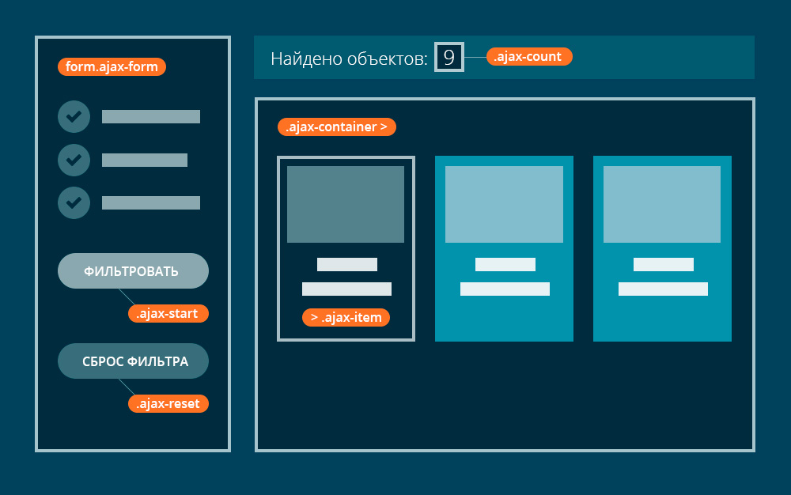
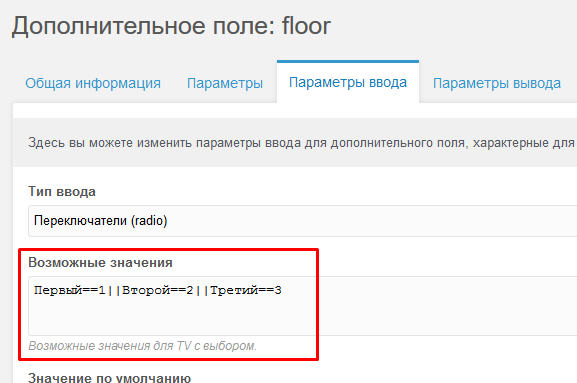

Сегодня мы научимся создавать фильтр ресурсов в MODx Revolution с возможностью сортировки по любому TV полю и подгрузкой результатов по клику "Загрузить еще". Для вывода результатов будем использовать сниппет pdoResources.

Скачать все сниппеты и необходимые файлы урока.
Для начала необходимо установить пакет pdoResources, который входит в состав пакета pdoTools. Вы можете установить или весь набор пакетов pdo (pdoTools) или только pdoResources отдельным пакетом для создания фильтра на MODx Revolution.
После установки пакетов, давайте подключим сниппет, который вы скачали в ваш проект. Если вы разрабатываете каталог сейчас с нуля, то советую придерживаться использования определенных классов для Ajax фильтрации. Схема именования классов:
Однако если у вас уже готовый каталог, вы можете определить классы элементов Ajax фиьтра в JS файле (см. ниже).
Обратите внимание, что .ajax-item должен быть непосредственным потомком .ajax-container. Если вы используете сетку Bootstrap для разметки колонок, можете определить класс контейнера как "row ajax-container", а колонки айтема как "col-md-4 ajax-item".
Подключение JS скрипта Ajax фильтра
Подключим скрипт JS к проекту. Вы можете подключить его как отдельным файлом, так и непосредственно в файл кастомных скриптов проекта. Для работы скрипта требуется jQuery.
$(function() {
//MODx pdoResources Ajax Filter
//Filter Settings
var fadeSpeed = 200, // Fade Animation Speed
ajaxCountSelector = '.ajax-count', // CSS Selector of Items Counter
ajaxContainerSelector = '.ajax-container', // CSS Selector of Ajax Container
ajaxItemSelector = '.ajax-item', // CSS Selector of Ajax Item
ajaxFormSelector = '.ajax-form', // CSS Selector of Ajax Filter Form
ajaxFormButtonStart = '.ajax-start', // CSS Selector of Button Start Filtering
ajaxFormButtonReset = '.ajax-reset', // CSS Selector of Button Reset Ajax Form
sortDownText = 'По убыванию',
sortUpText = 'По возрастанию';
function ajaxCount() {
if($('.ajax-filter-count').length) {
var count = $('.ajax-filter-count').data('count');
$(ajaxCountSelector).text(count);
} else {
$(ajaxCountSelector).text($(ajaxItemSelector).length);
}
}ajaxCount();
function ajaxMainFunction() {
$.ajax({
data: $(ajaxFormSelector).serialize()
}).done(function(response) {
var $response = $(response);
$(ajaxContainerSelector).fadeOut(fadeSpeed);
setTimeout(function() {
$(ajaxContainerSelector).html($response.find(ajaxContainerSelector).html()).fadeIn(fadeSpeed);
ajaxCount();
}, fadeSpeed);
});
}
$(ajaxContainerSelector).on('click', '.ajax-more', function(e) {
e.preventDefault();
var offset = $(ajaxItemSelector).length;
$.ajax({
data: $(ajaxFormSelector).serialize()+'&offset='+offset
}).done(function(response) {
$('.ajax-more').remove();
var $response = $(response);
$response.find(ajaxItemSelector).hide();
$(ajaxContainerSelector).append($response.find(ajaxContainerSelector).html());
$(ajaxItemSelector).fadeIn();
});
})
$(ajaxFormButtonStart).click(function(e) {
e.preventDefault();
ajaxMainFunction();
})
$(ajaxFormButtonReset).click(function(e) {
e.preventDefault();
$(ajaxFormSelector).trigger('reset');
$('input[name=sortby]').val('pagetitle');
$('input[name=sortdir]').val('asc');
setTimeout(function() {
$('[data-sort-by]').data('sort-dir', 'asc').toggleClass('button-sort-asc').text(sortUpText);
}, fadeSpeed);
ajaxMainFunction();
ajaxCount();
})
$(''+ajaxFormSelector+' input').change(function() {
ajaxMainFunction();
})
$('[data-sort-by]').data('sort-dir', 'asc').click(function() {
var ths = $(this);
$('input[name=sortby]').val($(this).data('sort-by'));
$('input[name=sortdir]').val($(this).data('sort-dir'));
setTimeout(function() {
$('[data-sort-by]').not(this).toggleClass('button-sort-asc').text(sortUpText);
ths.data('sort-dir') == 'asc' ? ths.data('sort-dir', 'desc').text(sortDownText) : ths.data('sort-dir', 'asc').text(sortUpText);
$(this).toggleClass('button-sort-asc');
}, fadeSpeed);
ajaxMainFunction();
});
});
- Строки 5-13: определение переменных для CSS селекторов Ajax фильтра. Не меняем, если используем стандартные значения, как на рисунке выше;
- Строки 15-22: скрипт счетчика ресурсов в результатах фильтрации;
- Строки 24-35: основная функция Ajax фильтрации;
- Строки 37-49: обработчик события по клику на кнопку "Загрузить еще";
- Строки 51-54: обработчик события по клику на кнопке "фильтровать". Данная кнопка может отсутствовать, так как фильтрация происходит автоматически. Автоматическая фильтрация может быть отключена путем удаления строк 68-70;
- Строки 56-66: обработчик события очистки формы и сброса фильтра. Строки 59-63 отвечают за сброс параметров сортировки;
- Строки 68-70: функция автоматической сортировки при изменении полей формы фильтра;
- Строки 72-82: универсальная функция сортировки по tv параметру.
Я постарался сделать данный скрипт максимально универсальным, поэтому если вы используете стандартные селекторы элементов Ajax фильтра, то редактировать ни чего не нужно.
Подключение PHP сниппета в MODx Revolution
Создайте новый сниппет в панели управления MODx catalogFilter и заполните его следующим содержимым:
<?php
//Filter Fields Settings
$filter = array();
//Radio, Select & Text Fields Type
if($_GET['floor']) {
$filter[] = 'floor='.$_GET['floor'];
}
//Two Text Fields From To
if($_GET['area_from']) {
$filter[] = 'area>='.$_GET['area_from'];
}
if($_GET['area_to']) {
$filter[] = 'area<='.$_GET['area_to'];
}
//Checkbox Type
if($_GET['garage']) {
$filter[] = 'garage=1';
}
//End Settings
//Sort
if($_GET['sortby']) {
$sortby = $_GET['sortby'];
} else {
$sortby = 'pagetitle';
}
if($_GET['sortdir']) {
$sortdir = $_GET['sortdir'];
} else {
$sortdir = 'asc';
}
//End Sort
//Offset
$offset = 0;
if($_GET['offset']){
$offset = $_GET['offset'];
}
if($filter) {
$where = $modx->toJSON(array($filter));
} else {
$where = '';
}
$params_count = array(
'parents' => $parents,
'limit' => 0,
'tpl' => '@INLINE ,',
'select' => 'id',
'includeTVs' => $fields,
'showHidden' => '1',
'where' => $where
);
$count = $modx->runSnippet('pdoResources',$params_count);
$count = count(explode(',',$count))-1;
$modx->setPlaceholder('count',$count);
$params = array(
'parents' => $parents,
'limit' => $limit,
'offset' => $offset,
'tpl' => $tpl,
'select' => 'id,pagetitle,introtext,content',
'includeTVs' => $fields,
'showHidden' => '1',
'sortby' => $sortby,
'sortdir' => $sortdir,
'where' => $where
);
$more = $count - $offset - $limit;
$lim = $more > $limit ? $limit : $more;
$button = '';
if($more > 0){
$button = '<div class="ajax-filter-count" data-count="'.$count.'"><a href="#" class="ajax-more">Загрузить еще '.$lim.' из '.$more.'</a></div>';
}
return $modx->runSnippet('pdoResources',$params).$button;
Между комментариями //Filter Fields Settings и //End Settings находятся параметры, которые вам необходимо отредактировать под свой проект. Тут ни чего сложного, просто прописываете name полей input и проверяете их условием if. Для полей типа Radio, Select и Text используем пример из строк 5-8. Для определения промежуточного значения от и до можно воспользоваться примером из строк 11-16. Для чекбоксов подойдет пример из строк 19-21.
В строке 74 сниппета вы можете задать свои классы, но не удаляйте текущюю разметку, так как она учавствует в скриптах для подгрузки контента.
Пример возможных значений в панели управления MODx для радиокнопок: Первый==1||Второй==2||Третий==3
Пример вывода радиокнопок во фронтенд:
<input name="floor" value="0" type="radio" checked>
<input name="floor" value="1" type="radio">
<input name="floor" value="2" type="radio">
<input name="floor" value="3" type="radio">
Здесь именование name="floor" соответствует строкам 6-8 нашего сниппета catalogFilter. Аналогично реализована обработка других полей формы. Я думаю, это понятно и создание своих собственных полей не будет для вас проблемой.
Вывод сниппета осуществляется в шаблоне каталога следующим образом:
[[!catalogFilter?
&tpl=`tplCatItem`
&limit=`3`
&parents=`5`
&fields=`image,area,floor,garage,price`]]
- tpl=`tplCatItem` - чанк айтема в списке каталога;
- limit=`3` - Сколько записей выводить и по сколько записей подгружать при клике на кнопке "Загрузить еще";
- parents=`5` - указываем id роительского документа для каталога ресурсов;
- fields=`image,area,floor,garage,price` - перечисляем TV's, которые необходимо показать в чанке tplCatItem и которые необходимо обрабатывать при фильтрации.
Пример чанка tplCatItem
<div class="ajax-item">
<img src="[[+tv.image]]" alt="[[+pagetitle]]">
<h4>[[+pagetitle]]</h4>
<table>
<tr>
<td>Этаж</td>
<td>[[+tv.floor]]</td>
</tr>
[[+tv.area:isnot=``:then=`
<tr>
<td>Площадь</td>
<td>[[+tv.area]] кв.м.</td>
</tr>
`]]
<tr>
<td>Гараж</td>
<td>[[+tv.garage:is=`1`:then=`Есть`:else=`Нет`]]</td>
</tr>
<tr>
<td>Цена:</td>
<td>[[+tv.price]]</td>
</tr>
</table>
</div>
Комплексный пример вывода во фронтенд можете посмотреть в репозитории проекта на гитхабе в файле demo.html.
Ajax сортировка по TV
В нашем скрипте имеется готовое решение для сортировки результатов фильтрации по любому TV полю. В форму фильтра вставьте следующие скрытые поля и не меняйте их значение, они просто должны быть в форме фильтра:
<!-- Sort Fields -->
<input type="hidden" name="sortby" value="pagetitle">
<input type="hidden" name="sortdir" value="asc">
<!-- Sort End -->
В любом месте вашего HTML шаблона сделайте вывод кнопки и в data атрибуте укажите поле, по которому хотите фильтровать выдачу:
Сортировать по цене: <button data-sort-by="price">По возрастанию</button>При клике тогглится класс button-sort-asc, который можете использовать для оформления кнопки при смене направления сортировки, добавления стрелочек и т. д. в атрибут data-sort-by можно писать любой TV, учавствующий в фильтрации. С сортировкой все.
Итак, мы рассмотрели создание несложного Ajax фильтра ресурсов в MODx с выводом результатов в сниппет pdoResources.
Премиум уроки от WebDesign Master


Другие уроки по теме «CMS/Framework»
- Как создать тему для WordPress. Грамотная посадка верстки на WordPress (Right Way)
- Быстрое создание красивых сайтов на WordPress. Layers Style Kit на реальном примере
- Руководство по созданию тем на WordPress и StyleKit's с использованием Layers Framework
- Layers. Быстрая разработка сайтов на WordPress #1. Знакомство с Layers WP
- Создание лендинга на WordPress с нуля
- Посадка типовой секции Landing Page на MODx с использованием MIGX (добавляемые поля)